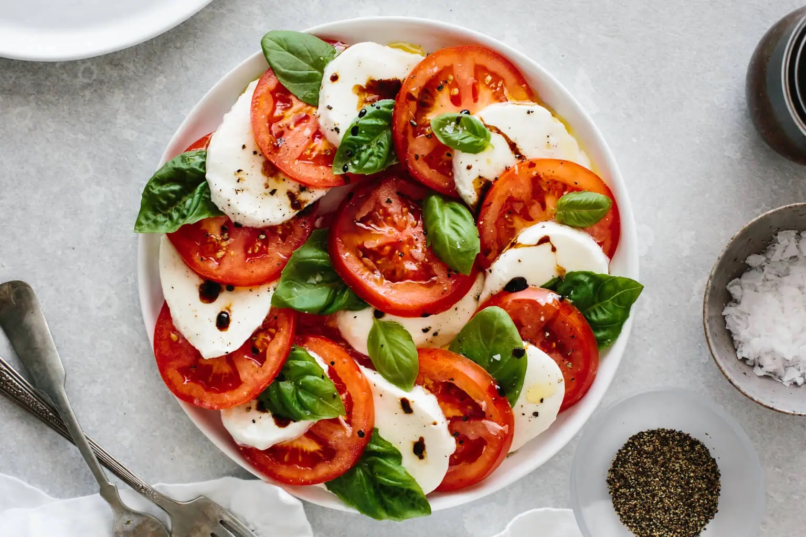
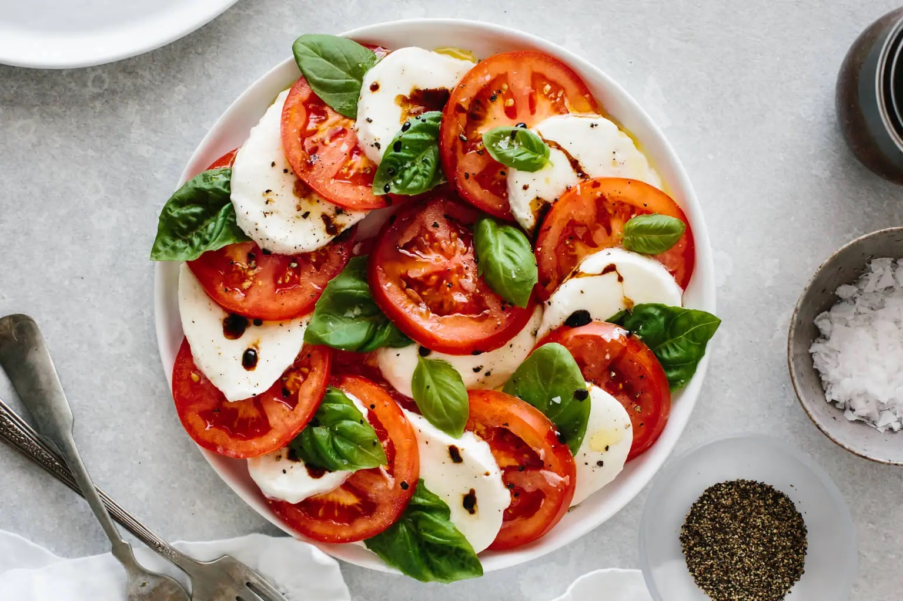

JUMP TO RECIPE

JUMP TO RECIPE

Caprese salad is a simple and elegant salad made with alternating slices of juicy, ripe tomatoes and creamy mozzarella. It’s topped with fresh basil leaves and drizzled in olive oil and balsamic vinegar, then sprinkled with salt and pepper. It’s a classic Italian salad and my personal favorite!
The most important thing with caprese salad is the freshness of the ingredients. That’s why it’s a summertime staple, when tomatoes and basil are fresh and at their best. Here’s what’s in it:
- Tomatoes: Splurge on the juiciest tomatoes you can find. Whether that’s organic heirloom tomatoes or plum tomatoes, just make sure they’re ripe with no hint of green and almost about to burst.
- Mozzarella: Again, don’t skimp on cheap stuff. Grab a big ball of fresh, creamy, authentic mozzarella (mozzarella di buffalo is also great) for the most perfect texture. You’ll usually find it packed in water.
- Basil: Pluck those leaves fresh from the plant right before serving. You want a bright green color and a fresh aroma that makes you feel like you’re wandering through an Italian garden.
- Olive Oil: I’m sure you’ve gathered the theme here, but fresh is also key with olive oil. Opt for an excellent cold-pressed, extra virgin olive oil with a bit of a bite. It doesn’t have to be expensive, but it does have to be good. California Olive Ranch and Lucini are two of my go-to brands.
- Balsamic Vinegar: I’ll be the first to say that balsamic vinegar is not classic or necessary on caprese salad, but boy do I love it. And when it’s made into a balsamic reduction it’s thick and sweet and lovely. You can add it or leave it off, it’s up to you!
- Salt and Pepper: Use a flakey salt like a Maldon Salt or triangular sea salt for that perfect texture. Just don’t use table salt. Add freshly cracked black pepper for the finishing touch.
- 3 large tomatoes, sliced
- 8 ounces mozzarella, sliced
- a handful of fresh basil leaves
- 2 tbsp olive oil
- 1 tbsp balsamic reduction (balsamic glaze)
- salt and pepper
- Add a slice of tomato to a plate, then add a slice of mozzarella on top. Keep alternating slices of tomato and mozzarella until you've used up all the ingredients.
- Place fresh basil leaves in between the layers. I prefer smaller basil leaves to keep them whole, but if you have large basil leaves you can cut them up as well.
- Drizzle the olive oil and balsamic reduction on top of the tomatoes and mozzarella.
- Sprinkle with salt and pepper, then serve immediately.
BACK TO THE TOP